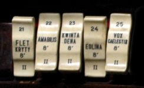
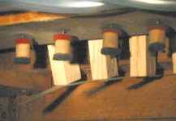
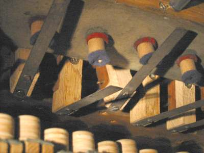
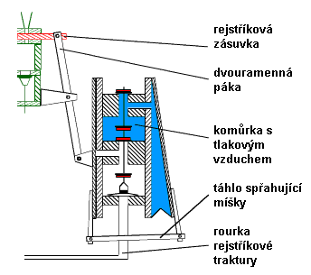
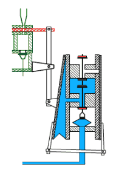

Stejnì jako tónové ventily i systém registrace ve vzdušnici mùže být
ovládán pneumaticky. V takovém pøípadì hovoøíme o pneumatické
rejstøíkové traktuøe. Princip funkce obou traktur (hrací i
rejstøíkové) je velmi podobný. Vzhledem k rozmìrùm rejstøíkových ventilù
(jsou o hodnì vìtší, než tónové) èi síle, nutné k pøesouvání zásuvek,
musí být všechny komponenty, bezprostøednì s nimi svázané podstatnì
vìtší a silnìjší. Stejnì jako u hrací traktury varhaník na hracím stole
ovládá prostøednictvím sklopek èi táhel jen øídicí ventil, další ovládání
se dìje jen stlaèeným vzduchem, vedeným opìt rourkami s vloženými pomocnými
ventily a relé. Na následující ilustraci øezu varhanami s kuželkovou vzdušnicí a rejstøíkovými
kancelami je rejstøíková traktura zvýraznìna èervenou
barvou. (Podrobnìjší popis jednotlivých souèástí je
uveden na úvodní stránce "Pneumatická
traktura"). |
Jedním z typù øídicích ventilù
rejstøíkové traktury je posuvný ventil. Stlaèený vzduch ze vzduchové komùrky
u ventilu se v pøíslušné poloze tahélka dostane kanálkem vyfrézovaným
v bloèku dále do rourky traktury a pøenese tak ovládací tlakový impuls
k dalším souèástem (výkonným ventilùm, relé…). Bloèek je ovládán varhaníkem
pomocí manubria. |
| Jinou konstrukci vypínaèe rejstøíkù spojeného s ventilem traktury, tzv. sklopky ukazuje následující animace: |
Všimnìme si stabilní polohy sklopky v obou pozicích
– zapnuto i vypnuto. Mechanismus se chová jako bistabilní (na rozdíl od
napø. klávesy) a k ovládání potøebuje krátkého pùsobení síly na jednu
ze stran sklopky jen pøi zmìnì polohy – pøeklopení (sklápìní, odtud „sklopka“).
Další práci, spojenou s uskuteènìním zapnutí èi vypnutí hlasu už pøevezmou
navazující èásti traktury. Obdobné øešení je pøedstaveno na následujících fotografiích. Je na nich zachycen mechanismus sklopek z pohledu varhaníka a zvnitøku stolu. Jsou na nich patrné døevìné páky s pøipevnìnými plíšky. Sklopky ovládá varhaník, páky pak pøes plíšky nadzvedávají kuželky ventilkù ukryté ve vzduchovém kanále. Snímek zachycuje situaci, kdy jsou všechny rejstøíky vypnuté (všechny ventilky jsou v klidové –dolní poloze). |
  |
Na snímku samozøejmì není vidìt vnitøek vzduchové
komory s ventilky. Z nich jsou viditelné jen spodní èásti kuželek s našroubovanými
oøíšky (døevìná èi kožená matièka, polepená zespod mìkkou plstí (modrošedou),
dosedající v okamžiku zapnutí hlasu na plíšek). Následující fotografie
ukazuje polohu pák a ventilù v okamžiku zapnutí dvou hlasù: |

Pøeklopení sklopky zpùsobí pøes páku a plíšek nadzvednutí pøíslušného
ventilu, který vpustí stlaèený vzduch do odpovídající rourky. U nadzvednutého
ventilu je k otvoru ve vzduchovodu, kterým prochází drát kuželky, plíškem
pøitisknuto tìsnìní (èervené) nad oøíškem a ten je tak utìsnìn. V nástrojích s podélnou vzdušnicí (napø. kuželkovou s rejstøíkovými
kancelami) je konstrukce rejstøíkové traktury prakticky shodná s trakturou
tónovou (viz obrázek øezu varhanami se zvýraznìnou trakturou na zaèátku
stránky). Rozdíl je až na konci traktury v konstrukci výkonného ventilu.
Ten u tohoto typu vzdušnice naplòuje stlaèeným vzduchem rejstøíkovou
kancelu probíhající po celé délce vzdušnice, musí tedy mít tomu odpovídající
rozmìry, které jsou nìkolikanásobnì vìtší než rozmìry tónových ventilù.
Pro otevírání vìtších ventilù se nejèastìji používají klínové míšky. |
Pøeklopení sklopky na hracím stole zpùsobí nadzdvižení
ventilu ve vzduchové komùrce a naplnìní navazující rourky vzduchem. Na
jejím konci je malý míšek, jehož naplnìní zpùsobí nadzdvižení a otevøení
malého kuželkového ventilu, který následnì vpustí tlakový vzduch do vìtšího
míšku – akèního èlenu traktury. Jeho horní deska je pøes úhelník spøažena
se zásuvkou, takže nadmutí míšku pøi naplnìní vzduchem zpùsobí pøesun
zásuvky ve vzdušnici a zapnutí hlasu. Míšek je naplnìn po celou dobu,
kdy je hlas zapnutý. Pokud varhaník pøeklopí sklopku zpátky (vypne rejstøík), poklesnou oba ventily a míšek splaskne. Jeho víko, zatížené pomocným závažím poklesne a pøes úhelník pøesune zásuvku do polohy, pøi které je hlas vypnutý. Na animaci pro názornost nejsou zachovány proporce jednotlivých komponentù, rozmìry akèního míšku mohou být podstatnì vìtší v závislosti na síle nutné k pohybu zásuvky. Jinou možností øešení mechanismu zásuvky je použití dvojice spøažených, svisle umístìných klínových míškù (na ilustraci pro názornost opìt bez zachování mìøítek). |
|
Samotný mechanismus je tvoøen dvìmi naplòovanými (tlakovými)
míšky, jejichž pohyblivé desky jsou navzájem spøaženy táhlem. Jeden z
míškù je navíc pomocí dvouramenné páky spojen se zásuvkou. Míšky jsou
naplòovány stlaèeným vzduchem ze vzduchové komory pøes dvojèinný ventil
støídavì – vždy, když je jeden naplnìn, druhý se vyprázdní. Ventil je
ovládán pomocí relé, tvoøeného malým míškem pod ventilem, který je naplòován
rourkou od hracího stolu (øídicí mechanismus je shodný, jako v pøedchozích
pøípadech). |
 |
Obrázek pøedstavuje mechanismus v klidovém stavu.
Rourka od hracího stolu je prázdná a ventily ve spodní poloze vpouštìjí
vzduch do pravého míšku souèasnì s otevøením výpustného otvoru levého
míšku, takže vzduch z nìj mùže volnì uniknout do okolí. Zásuvka je zasunuta
do vzdušnice a hlas je vypnutý. |
|  | Naplnìní rourky vzduchem (zapnutím ovládacího prvku na hracím stole) nadme míšek pod kuželkou ventilu a nadzvedne ji. Zastaví se tím pøívod vzduchu do pravého míšku a souèasnì otevøe pøívod do levého. U pravého míšku se navíc otevøe výpustný otvor, kterým se míšek vyfoukne. Nadmutý levý míšek pøes páku vytáhne zásuvku ze vzdušnice a zapne hlas. V tomto stavu míšky setrvají po celou dobu, po kterou je rourka od hracího stolu pod tlakem (sklopka èi tahélko na hracím stole je v poloze zapnuto). Èinnost celého mechanismu traktury (zpomalenì) pøibližuje následující animace: |
Na souvisejících stránkách jsou popsány nejèastìji
používané komponenty pneumatické
traktury, tónová traktura,
traktura spojek a
pneumatická pomocná zaøízení v kapitolách o crescendu
a kolektivech a volných kombinacích.. |
Poznámka: Tato stránka je souèástí Anatomie varhan ®, © Ing. Petr Bernat. Všechny animace © Konrad Zacharski